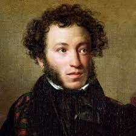
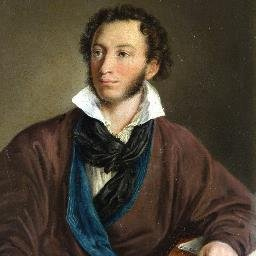
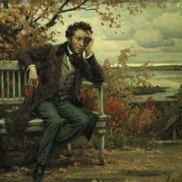

Моя Биография
  
Алекса́ндр Серге́евич Пу́шкин (26 мая [6 июня] 1799, Москва — 29 января [10 февраля] 1837, Санкт-Петербург) — русский поэт, драматург и прозаик, заложивший основы русского реалистического направления, литературный критик и теоретик литературы, историк, публицист, журналист; один из самых авторитетных литературных деятелей первой трети XIX века. Ещё при жизни Пушкина сложилась его репутация величайшего национального русского поэта. Пушкин рассматривается как основоположник современного русского литературного языка. во всемирной паутине.